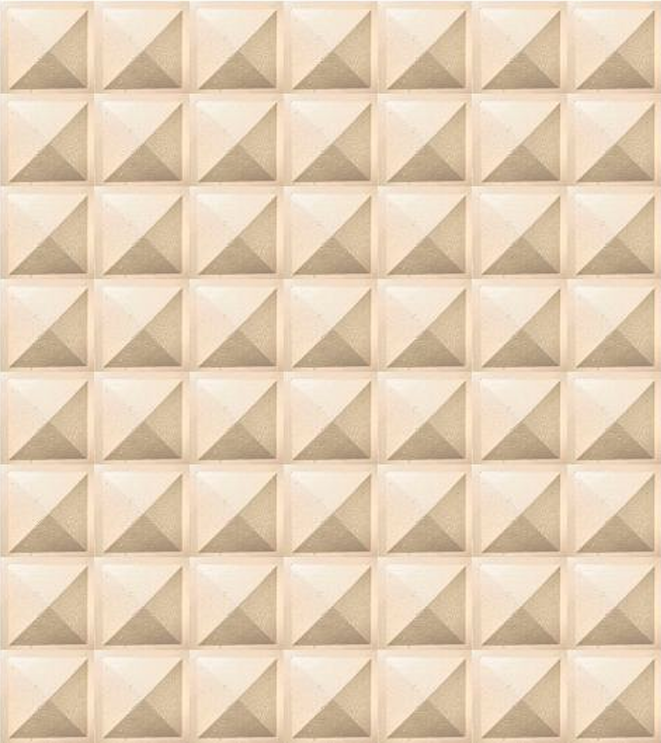

Resume
Architecture · Design · Fabrication · AI Workflow
Architectural designer focused on creating meaningful spaces through material sensitivity, fabrication, and future-oriented digital workflows. Deeply interested in integrating AI, visualization tools, and emerging technologies into an advanced design practice that looks forward while remaining grounded in craft, clarity, and human experience.
Education
Rhode Island School of Design (RISD) — Master of Architecture
2025–2027
M.Arch candidate, CGPA: 4.0 / 4.0 · Providence, Rhode Island
University of California, Davis — MFA in Design
2022–2024
CGPA: 4.0 / 4.0 · Davis, California
Universidad Americana — BS in Architecture
2015–2020
CGPA: 4.6 / 5.0
Studio Experience
California Lighting Technology Center — Teaching Assistant
2022–2025
Technology, research & innovation · Davis, California
- Supported and guided scale model making and solar design courses through hands-on instruction and technical assistance.
- Helped students develop realistic physical models, material strategies, and presentation-ready prototypes.
- Delivered lectures, coordinated class materials, and managed budgeting and purchasing for course needs.
- Worked closely with faculty to streamline workflows between design teaching, fabrication, and research support.
Achon Industrial — Commercial Architect for Modular & Custom Furniture Design
2017–2021
Asunción, Paraguay
- Designed modular and custom furniture systems and developed project specifications for manufacturing.
- Led client consultations, translating functional needs and spatial requirements into tailored design concepts.
- Managed project negotiations from proposal stage to contract definition, helping move projects smoothly into production.
- Prepared detailed budgets aligned with design intent, fabrication constraints, and project scope.
De Loof Project Management — Project Management Assistant / Technical Advisor
2015–2017
Corporate Area, Itaipu Dam · Paraguay / Brazil
- Prepared executive and construction budgets for architectural and corporate projects.
- Produced technical specifications and coordinated project review and approval processes.
- Monitored project development and progress between the studio, consultants, and other stakeholders.
- Supervised staff and conducted in situ surveys and site data collection to support project documentation.
XYZ Engineering Studio — AutoCAD Draftsman
2014–2015
Asunción, Paraguay
- Conducted on-site measurements for construction and demolition projects.
- Produced technical drawings for healthcare facility expansion projects and related documentation.
Skills & Workflow
Design / Software
AI / Emerging Workflow
Awards
Fulbright Scholar
2022–2023
UC Davis Provost’s Award
2022–2023
Exhibitions / Features
NYCxDESIGN — Upcoming Exhibition
2026
Form Portfolios — Featured Page
2026
Featured in RISD students’ site-specific furniture work inspired by Louis Kahn.
Click to see
Manetti Shrem Museum of Art
2024
MFA Thesis Exhibition
Languages
English: Full Professional Fluency
Spanish: Native
Guaraní: Native
Portuguese: Basic
Spanish: Native
Guaraní: Native
Portuguese: Basic